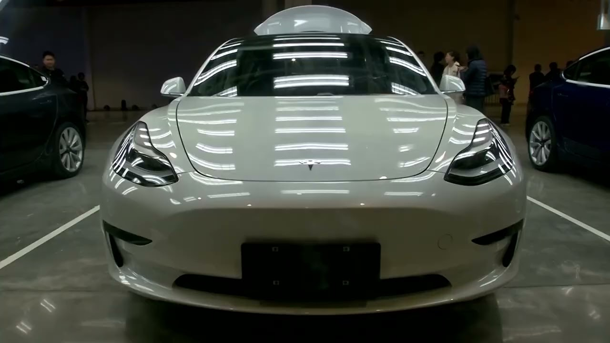

【中国比亚迪在欧洲销量首次超越特斯拉，报告称 | 路透社】
Summary: Chinese car maker BYD outsold Tesla in Europe for the first time, marking a major shift as Tesla faces declining demand due to aging models and Elon Musk's politics.
摘要： 中国汽车制造商比亚迪在欧洲销量首次超越特斯拉，标志着重大转折，特斯拉因车型老化和埃隆·马斯克的政治立场面临需求下滑。

⏱️ Estimated Reading Time: 2 min
Chinese car maker BYD sold more electric vehicles in Europe than Tesla for the first time in a quote watershed moment.
中国汽车制造商比亚迪在欧洲的电动汽车销量首次超过特斯拉，被称为一个分水岭时刻。
That's according to a report from market researchers JATO Dynamics.
这是根据市场研究机构JATO Dynamics的报告得出的结论。
This shift away from Tesla comes as its aging model lineup and CEO Elon Musk's politics hurts demand.
这一转变源于特斯拉车型老化和首席执行官埃隆·马斯克的政治立场损害了需求。
The report said in April BYD registered 7,231 battery powered EVs in Europe while Tesla registered almost 70 fewer.
报告称，4月份比亚迪在欧洲注册了7,231辆纯电动汽车，而特斯拉的注册量少了近70辆。
This is significant an industry analyst said as Tesla's led the market for years while BYD only officially begun operations beyond Norway and the Netherlands in late 2022.
一位行业分析师表示，这意义重大，因为特斯拉多年来一直主导市场，而比亚迪直到2022年底才正式在挪威和荷兰以外的地区开展业务。
Demand for EVs in Europe remains steady.
欧洲对电动汽车的需求保持稳定。
And despite the EU's tariffs on Chinese-made EVs, registrations of such cars increased 59% in April from a year earlier.
尽管欧盟对中国制造的电动汽车征收关税，但此类汽车的注册量在4月份同比增长了59%。
While car makers from Europe, Japan, South Korea, and the US recorded 26% growth.
而来自欧洲、日本、韩国和美国的汽车制造商则录得26%的增长。
For Tesla, it reported its first drop in annual deliveries last year.
特斯拉去年首次出现年度交付量下降。
And analysts expect another fall this year after a 13% decline in Q1.
分析师预计，在第一季度下降13%后，今年将再次下滑。
A star is born, Elon.
一颗新星诞生了，埃隆。
Musk's political actions have not only contributed to a demand slump, but also triggered waves of protests against Tesla.
马斯克的政治行为不仅导致需求下滑，还引发了对特斯拉的抗议浪潮。
And analysts say customers are also waiting for cheaper versions of its bestseller, Model Y, to become widely available before buying.
分析师表示，消费者还在等待其畅销车型Model Y的更便宜版本广泛上市后再购买。
However, Musk said earlier this week that Tesla has already turned around sales and demand was strong in regions apart from Europe.
然而，马斯克本周早些时候表示，特斯拉的销售已经好转，且除欧洲外其他地区的需求强劲。